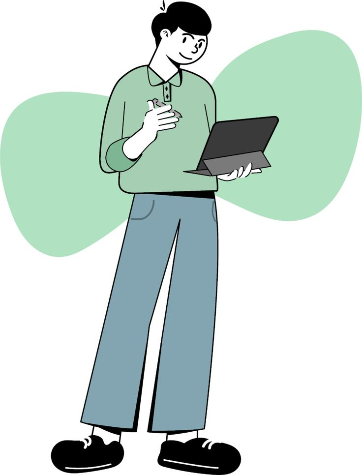

Growth begins when curiosity meets opportunity
My Professional Skills (IT1215) portfolio: nine weeks of lectures, one group project at the National Zoological Gardens, and what I learned from each one.
Start with Week 1
About me
I'm Chanuka Jayasundara, a Year 2 Semester 2 CS student at SCU. Through this module, I've come to understand that having technical knowledge is only one part of becoming a successful professional. Developing skills such as communication, teamwork, adaptability and self-awareness is equally important in the workplace.
This portfolio is a reflection of my learning journey throughout the module. Each page focuses on a lecture, highlighting the activities we participated in, the knowledge and skills I gained, photos from the sessions, and my personal reflections. The final section showcases our group project, the Zoo Awareness Program, and the experience I gained from being part of it.
Learning today to work better tomorrow
Nine weeks, grouped into three ideas.
Weekly notes and group project
Everything starts with Week 1
Follow the weeks in order and see how each lecture built on the last.
Start reading